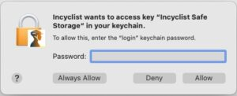

Practical answers about setup, routes, videos, integrations and platform messages. Use the quick links below to jump directly to a topic.
How do I start my first indoor ride?
Download Incyclist for Windows, macOS, Linux, Android or iOS, then launch the app and pair your trainer. Choose a real world video, import a GPX route, or pick a place to explore in free ride on desktop. The user manual has detailed setup instructions.
Incyclist is free and open source. There is no subscription or trial limit. If you would like to support the project, donations are optional.
Which trainers and sensors can I connect?
Incyclist supports Bluetooth FTMS smart trainers, Wahoo and Tacx FE-C over BLE, power meters and heart rate monitors, plus Direct Connect (WiFi) trainers. Desktop builds also support ANT+ FE-C trainers and sensors with an ANT+ dongle. Zwift Play and Zwift Click controllers and Daum ergo bikes are supported too. See the full device overview.
Can I use my own routes and structured workouts?
Yes. Import a GPX track or a route from Komoot and ride it in Street View, Satellite View or Map View. You can ride a built-in workout, import a Zwift .zwo file or sync your intervals.icu calendar over a video or route. Free ride, where you choose each turn as you go, is currently available on desktop.
How do I run Incyclist on Linux?
Incyclist ships as an AppImage, for x86-64 and for ARM64. Download it from the
download page, make the file executable and run it —
there is no installer.
Bluetooth trainers, power meters and heart rate monitors are supported directly, and
the app runs as a normal user. For ANT+ devices you need an ANT+ dongle.
The details differ between distributions. Fred van Gestel maintains a guide covering
several Linux flavours —
check here for more details.
How can I create my own video?
Incyclist can ride any video that is paired with a GPX track, so you can turn your own
footage into a route. In outline: record the ride as video and as a GPX track, smooth
the GPX, convert the video, and describe the pairing in a small XML file that you then
import.
Incyclist supports every video encoding that Chromium supports. H264 works everywhere;
H265 and AV1 have limitations on some platforms, which matters if you intend to share
your video with other riders rather than just ride it yourself.
Fred van Gestel has written a step-by-step walkthrough of the whole process —
check here for more details. Importing existing
RLV, EPM and Tacx files is covered in the
Incyclist manual.
Where can I get videos to ride?
Incyclist rides real world videos (RLVs), and a number of riders and shops publish
them. The sites below are run by other people, not by Incyclist — they are listed
because riders find them useful, not as a recommendation or endorsement.
Riders also swap videos and routes in the
Incyclist
Strava club. If a link here is dead, or you publish videos yourself and would like
to be listed, let me know.
How can I automatically upload my activities to Strava?
In order to enable Incyclist to upload activities to Strava, you need to connect your
Strava account with the app.
Open the options dialog (click on
during training)
In the options dialog, select the user section
Click on "connect to Strava", login into your Strava account and grant the requested
permissions
Once that connection is established, whenever you save an activity, it will be
automatically uploaded to Strava.
Why is Windows warning me about 'harming my computer' and 'putting my PC at risk'
when I try to install Incyclist?
Microsoft has introduced a new system for verifying the authenticity of desktop
applications called SmartScreen that may trigger warnings when you download and install
Incyclist. It may report messages such as "This program is not commonly downloaded and
could harm your computer." or "Windows protected your PC. Windows SmartScreen prevented
an unrecognized app from starting. Running this app might put your PC at risk."
While this new system does insure that you are downloading an application that has not
been tampered with, it also introduces errant warnings, especially with a newly released
software applications and updates, such as Incyclist version releases.
Rest assured that the Incyclist application is signed and has a valid certificate (you
can check it yourself by viewing the Properties of the installer application). I follow
industry best practices in insuring the security of the software.
However, as mentioned earlier, due to the nature of how Windows is handling security,
it is common for newly released applications to experience false warnings about
security. Such is the case with the latest version of Incyclist, as I have added a new
signing certificate. This warning will eventually go away as more folks download and
install the software and the reputation increases over time.
Here are some detailed installation instructions to help you install:
After downloading and running the installer, Windows might report "Windows protected
your PC. Windows SmartScreen prevented an unrecognized app from starting. Running this
app might put your PC at risk."
Click on "More info" to reveal other options.
Click on the "Run anyway" button.
Continue with the Incyclist installation instructions.
Why do I get this popup on Mac: 'Incyclist wants to access key "Incyclist Safe
Storage" in your keychain'
When launching the Incyclist App 0.9.10 or later on Mac, the following popup
appears:

Background
The Incyclist App is basically just a re-packaged Chromium Browser and Chromium has
introduced a feature called "Safe Storage", which allows Web Pages to store secrets in
an encrypted local database. On Mac, the encryption keys are stored in the login
Keychain. Therefore, the Incyclist App has to request access to the encryption key and
you need to specifically allow this by clicking on Allow or Always Allow and enter your
password (the same password you use for login). This password is not
shared with Incyclist or any other app. It is just used by the Mac Keychain.
The Incyclist User Interface is then a Web Page that is launched in this Chromium
browser. The User Interface currently does not make use of this Safe Storage, so
whatever option (Always Allow, Deny, Allow) you select, will not make any difference to
Incyclist. But unfortunately, I have not found an option to completely disable "Safe
Storage" and prevent this popup to appear.
What should I do?
I would recommend to click on "Always Allow". Although any other option (even "Deny")
would also work for Incyclist, the popup would show up upon every launch of the app
unless you click on "Always Allow".